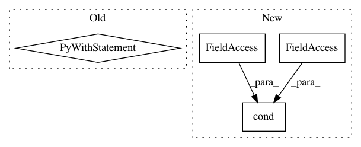

da73514fe9af58f35dc62a5c0c91ab60fd55f134,tensorforce/core/models/model.py,Model,api_act,#Model#,765
Before Change
with tf.control_dependencies(control_inputs=(incremented_buffer_index,)):
return tf.no_op()
with tf.control_dependencies(control_inputs=(reversed_variable_noise,)):
updated_buffers = self.cond(
pred=independent, true_fn=tf.no_op, false_fn=update_buffers
)
// Return timestep
with tf.control_dependencies(control_inputs=(updated_buffers,)):
// Function-level identity operation for retrieval (plus enforce dependency)
for name, spec in self.actions_spec.items():
actions[name] = util.identity_operation(
After Change
zero = tf.constant(value=0, dtype=util.tf_dtype(dtype="int"))
initialize = tf.math.equal(x=buffer_index, y=zero)
internals = self.cond(
pred=initialize, true_fn=initialize_internals, false_fn=retrieve_internals
)
Module.update_tensors(**states, **internals)
actions, internals = self.core_act(states=states, internals=internals)
Module.update_tensors(**actions)
In pattern: SUPERPATTERN
Frequency: 3
Non-data size: 4
Instances
Project Name: reinforceio/tensorforce
Commit Name: da73514fe9af58f35dc62a5c0c91ab60fd55f134
Time: 2019-01-18
Author: alexkuhnle@t-online.de
File Name: tensorforce/core/models/model.py
Class Name: Model
Method Name: api_act
Project Name: rwth-i6/returnn
Commit Name: a8954bb1295f947a21eee85adf563e668a161322
Time: 2021-03-27
Author: albzey@gmail.com
File Name: returnn/tf/util/basic.py
Class Name:
Method Name: select_src_beams
Project Name: reinforceio/tensorforce
Commit Name: 4251a86130e46e9d8a5e52ffc1c7f86bbd7f3f8a
Time: 2018-01-28
Author: aok25@cl.cam.ac.uk
File Name: tensorforce/core/preprocessing/running_standardize.py
Class Name: RunningStandardize
Method Name: tf_process